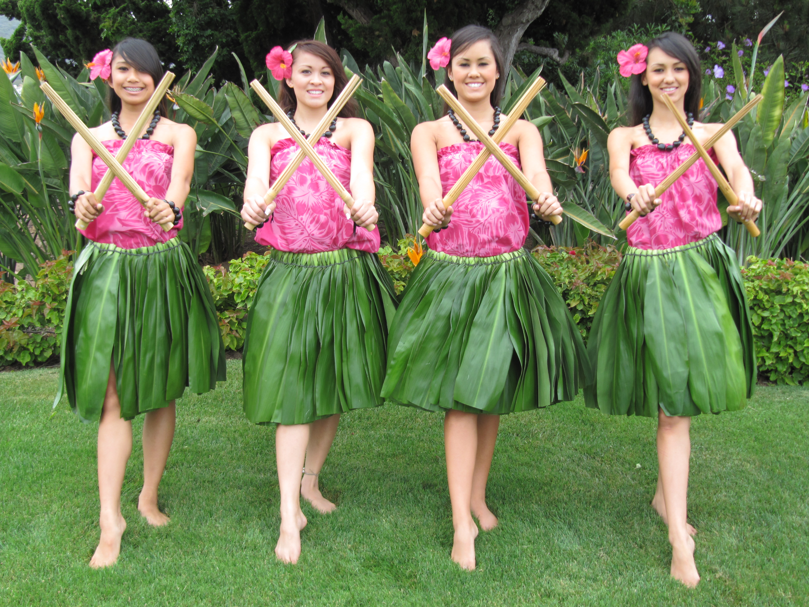

Hula dancing was created on the Hawaiian Islands by the Polynesians who had settled upon those islands. Wearing skirts made of palm leaves and flower leighs around the arms, legs, and heads, these talented dancers combine the art of movement and storytelling in a fascinating display of beauty and elegance.
